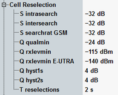

The parameters in this section define the cell reselection information to be transmitted in the system information blocks SIB3, SIB11 or SIB19. For detailed information, refer to 3GPP TS 25.304.
Option R&S CMW-KS410 is required.
This section is not relevant for reduced signaling.

Sets threshold Sintrasearch for intra-frequency measurements and for the hierarchical cell structure (HCS) measurement rules.
Remote command:Sets threshold Sintersearch for inter-frequency measurements and for the HCS measurement rules.
Remote command:Sets threshold S searchRAT m used in inter-RAT measurement rules for RAT m = GSM.
Remote command:Sets minimum required quality level in the target cell.
Remote command:Sets minimum required RX level in the target UMTS cell.
Remote command:Sets minimum required RX level in the target LTE cell.
Remote command:Sets the hysteresis for the cell reselection algorithm.
- Q hyst1s: used for GSM, TDD and for FDD cells in case the quality measure for reselection is set to CPICH RSCP
- Q hyst2s: used for FDD cells if the quality measure for reselection is set to CPICH Ec/No
Sets the time hysteresis for the cell reselection algorithm.
Remote command: